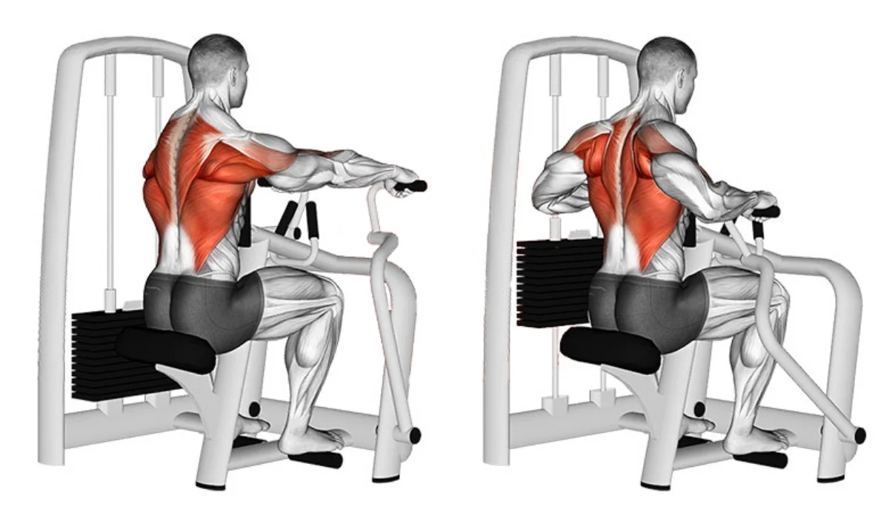
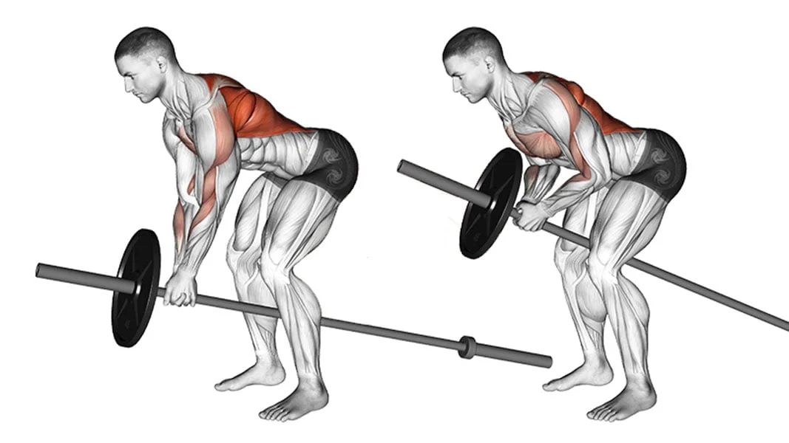
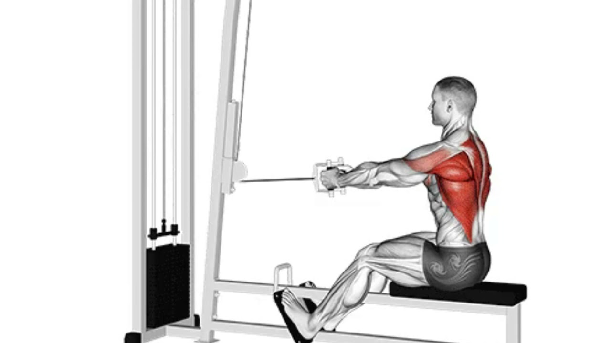

A remada articulada é um excelente exercício para o trabalho de dorsais e permite uma série de variações.

A remada cavalinho é um exercício composto onde há envolvimento de uma grande quantidade de massa muscular para sua realização.

A remada triangulo é um exercício que ajuda a fortalecer os músculos das costas, do abdômen e dos braços, melhorando a força,